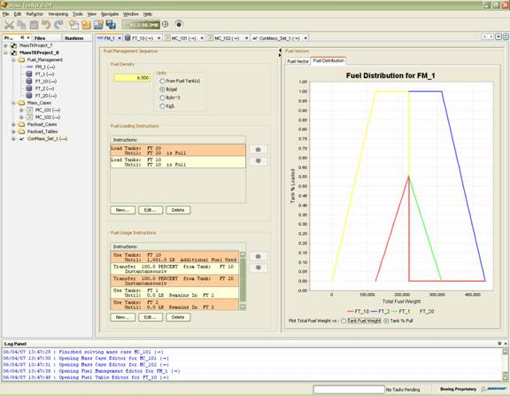
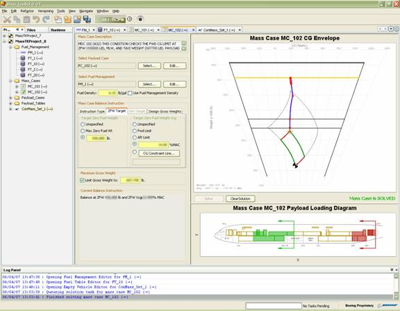

Welcome on Board NetBeans Air!

Tim Boudreau met the platform specialist Tom Wheeler to chat about Tom's latest
"little" project: He ports applications that analyse mass properties of aircraft for Boeing.
Tom, what kinds of applications did you port for Boeing, and why?
In 2005, we began a project to consolidate several applications
that had been developed internally over the years.
Each did some type of mass properties analysis on aircraft.
But since they were created by different people at different times,
they didn't necessarily share data easily.
“Instead
of writing a whole program from scratch,
we'd simply create a module and it would automatically
take advantage of algorithms, components and other features of the framework.”
Consequently, the engineers who used these programs would constantly have to switch
between them and find ways to export data from one application that could be read by the next.
There was also a fair amount of duplication between them.
So we wanted to "port" these applications into a single integrated framework
that used the best features of each,
yet made it easier to solve problems than it was with several individual tools.
Not only would this approach practically eliminate code duplication,
it would also reduce the amount of time needed to create new applications in the future.
Instead of writing a whole new program from scratch,
we'd simply need to create a new module and it would automatically
take advantage of algorithms, components and other features of the framework.
Even though integration projects like this sometimes grow too large,
we've found that NetBeans modularity also makes it easy
to pick and choose exactly what's included in the application.
Tell us more about the application, what exactly was it?
“While
Crays are obviously very fast machines, Java on modern PCs
is more than fast enough for this application. ”
The application I mentioned is called Mass Toolkit.
As I mentioned before, it integrates many of our older tools, most of which were written in Java.
However, we've also got an application that runs natively on a Cray supercomputer,
and Mass Toolkit should eventually replace that as well.
While Crays are obviously very fast machines,
Java on modern PCs is more than fast enough for this application.
More importantly, Mass Toolkit's ability to visualize the input and output data
graphically — in 3D space — is something our users are excited about.
Info: The Mass Properties Toolkit (MassTk)

The MassTk is an engineering analysis application by Boeing. It incorporates the functionality
from several legacy mass properties analysis applications that
were originally written in Java, Fortran, C, and even Perl.
MassTk is built on top of the NetBeans Platform 6.0.
It provides a rich GUI with custom editors for all business objects including 2D & 3D visualization.
Boeing uses MassTk to perform
payload balance solutions, loadability analysis, fuel management analysis,
fuel mass property analysis, and mass distribution to finite element models.
MassTk vastly improved pre- and post-processing of analyses,
it has a shallower learning curve, and lower maintenance costs.
Inside Boeing, are there more applications in production that are NetBeans platform based?
Yes. This January, another development team inside Boeing approached me
to ask about my experiences with the NetBeans platform.
They are supporting an in-house application called CSW
used by hundreds of engineers for structural analysis.
I described the pros and cons of the NetBeans platform,
explained what alternatives exist, and finally showed Mass Toolkit to them.
Eventually we decided that our applications had a lot in common.
About half of Mass Toolkit's modules are general purpose libraries for
plotting, XML, mathematics and reusable user interface components,
so they'd be useful to CSW as well.
I decided that instead of building Mass Toolkit on the NetBeans platform,
I could factor out these common parts into a new platform that extends the NetBeans platform.
“I
was able to train him on basic platform concepts and help him port his prototype
to the platform in less than two days.”
In other words, I moved several modules upstream,
and also added some additional build and branding enhancements.
And now Mass Toolkit and the new version of CSW
are built from the result, which we call the Boeing Shared Platform.
Soon after I created the Boeing Shared Platform,
another developer needed to write a new application called SIFT.
He was interested in creating SIFT on top of the platform,
and though he's a very competent programmer,
this was his first exposure to the platform.
I was able to train him on basic platform concepts
and help him port his prototype to the platform in less than two days.
Now SIFT has all of the platform features, including the window system,
declarative actions, service registration and dependency management.
We expect Mass Toolkit and SIFT to be released for production this summer,
though both applications have already released several versions for user testing.
The next version of CSW, which is also built on the Boeing Shared Platform,
is still in early stages of development.
What made Boeing choose the NetBeans platform?
We started this project with a pretty blank slate.
We had functional requirements, but how we met them was largely up to the development team.
“NetBeans
ultimately won because it would easily integrate
with all the Swing and Java3D code we already had.”
I first made a list of about twenty features that the ideal platform would provide,
looked at what was available and tracked what each one offered.
I quickly narrowed the list down to the NetBeans Platform and the Eclipse RCP.
While each platform had advantages, NetBeans ultimately won
because it would easily integrate with all the Swing and Java3D code we already had.
What has the experience been like working with the NetBeans platform?
How has it impacted productivity?
Frankly, we got off to a slow start because 2005 was the worst possible time
to begin learning and using the platform:
The 4.1 IDE had just been released and it lacked support for creating platform applications.
There also wasn't much current documentation available.
“The
Matisse form editor helped speed up development.”
In 2006, the NetBeans 5.0 IDE was released, and it was a huge benefit for us.
The API support
features of the new IDE made it simple to create new actions and TopComponents.
The Matisse form editor also helped speed up development.
Like most people, we'd previously been writing GUI code by hand in Java.
It's also a lot easier to find documentation and examples
now, plus the openide mailing list is a great resource where developers can help one another.
What are the plans for the future with the NetBeans Platform?
We're now moving towards the 6.0 IDE and platform.
We would have certainly appreciated new features for building platform application
in the new version, but we hope that will be forthcoming.
Meanwhile, we're looking forward to the new editor in the 6.0 IDE and
we're also pleased that the new platform
book is now available.
We'll continue refining the Boeing Shared Platform and perhaps be able
to port additional applications to it in the future.
Info: The Boeing Shared Platform (BSP)

The Boeing Shared Platform is a logical outgrowth of building MassTk on top of the NetBeans Platform:
BSP is a feature-rich platform created by factoring out the modules from MassTk
that are not specific to mass properties analysis,
but are useful to engineering analysis applications in general.
In addition to the NetBeans Platform, the BSP includes a number of
third-party open-source libraries, as well as a number of Boeing-developed modules.
Currently there are a total of four applications being built with the BSP.

{kind=link}
{kind=link}